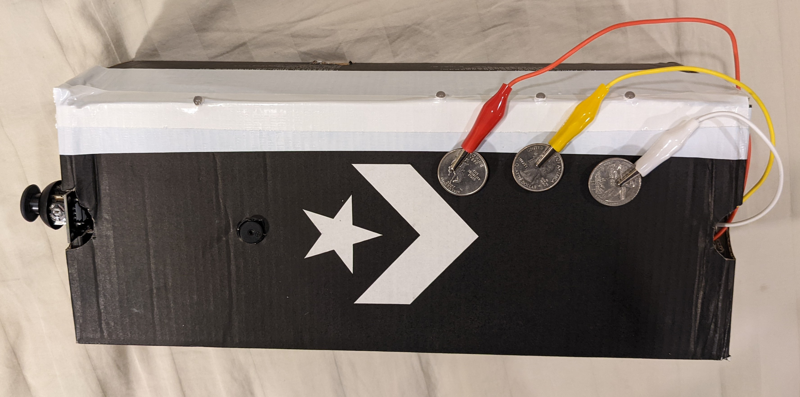

Demo Video
Concept
For this project, I made a portable synthesizer that creates sound with a passive buzzer. Users can play notes by pressing on three metal keys which act as capacitive sensors. These notes are set by the position of a joystick. An RGB LED shows the current joystick position with its color, and an individual LED lights up for each of the three keys.
Inputs:
- Joystick module
- 3 Capacitive touch sensors
Outputs:
- Passive buzzer
- RGB LED
- 3 white LEDs
Technical Implementation
Schematic
Circuit
Technical Writeup
The program works by first reading the position of the joystick, then setting the notes that can be played based on that. An RGB LED's color is also set by the joystick position to give that visual feedback to the player. Next, the capacitive touch sensors check if someone is touching one of the metal keys. Based on the key pressed, the buzzer will be set to play a note and the individual white LEDs will be turned on or off.
Capacitive sensing is completed with the CapacitiveSensor Library, and the passive buzzer is set with the built-in tone() function. Tones are defined by their frequency in Hertz in a separate file.
Firmware
- Download INO File -
/*
File: ShoeboxSynth.ino
Author: Max Coppock
This file has firmware to control a passive buzzer and LEDs
with a joystick and 3 capacitive sensors.
*/
// import capacitive sensor library
#include >CapacitiveSensor.h<
// file defining int values for musical notes
#include "pitches.h"
// ANALOG IN pins for the joystick
const int xPin = A0;
const int yPin = A2;
// speaker pin
const int beep = 11;
// joystick button press in pin
const int joySW = 9;
// rbg led pins
const int rPin = 3;
const int gPin = 5;
const int bPin = 6;
// note led pins
const int led1 = 10;
const int led2 = 12;
const int led3 = 13;
//cap sensors for keys
CapacitiveSensor cs42 = CapacitiveSensor(4,2);
CapacitiveSensor cs47 = CapacitiveSensor(4,7);
CapacitiveSensor cs48 = CapacitiveSensor(4,8);
// global note variables will be defined by joystick position
int note1, note2, note3;
//helper function to set RGB led
// setRGB (red, green, blue)
void setRGB(int r, int g, int b){
analogWrite(rPin, r);
analogWrite(gPin, g);
analogWrite(bPin, b);
}
void setup() {
//turn off auto calibrate for cap sensors- seems to work best for me
cs42.set_CS_AutocaL_Millis(0xFFFFFFFF);
cs47.set_CS_AutocaL_Millis(0xFFFFFFFF);
cs48.set_CS_AutocaL_Millis(0xFFFFFFFF);
//start serial monitor for debugging
Serial.begin(9600);
//set all led pins as outputs
pinMode(rPin, OUTPUT);
pinMode(gPin, OUTPUT);
pinMode(bPin, OUTPUT);
pinMode(led1, OUTPUT);
pinMode(led2, OUTPUT);
pinMode(led3, OUTPUT);
//use internal pullup resistor for the joystick button
//button pressed in will be LOW state
pinMode(joySW, INPUT_PULLUP);
}
void loop(){
// get joystick position analog in
int joyX = analogRead(xPin);
int joyY = analogRead(yPin);
/*
// Print joystick position to serial monitor for feedback
Serial.print(joyX);
Serial.print('\t');
Serial.println(joyY);
*/
// JOYSTICK SECTION
//determine joystick position, then set rgb LED and the notes
// X+ joystick
if(joyX > 800){
// BLUE
setRGB(0,0,255);
// D chord
note1 = NOTE_D3;
note2 = NOTE_FS4;
note3 = NOTE_A4;
//if joystick button is pushed in, make one of those notes a 7th
if(!digitalRead(joySW)){
note2 = NOTE_C4;
}
}
// X- joystick
else if(joyX < 200){
// GREEN
setRGB(0,255,0);
// G chord
note1 = NOTE_G3;
note2 = NOTE_B3;
note3 = NOTE_D4;
//if joystick button is pushed in, make one of those notes a 7th
if(!digitalRead(joySW)){
note3 = NOTE_F4;
}
}
// Y+ joystick
else if(joyY > 800){
// PURP
setRGB(255,0,255);
// Bm chord
note1 = NOTE_B3;
note2 = NOTE_D4;
note3 = NOTE_FS4;
//if joystick button is pushed in, make one of those notes a 7th
if(!digitalRead(joySW)){
note3 = NOTE_A4;
}
}
// Y- joystick
else if(joyY < 200){
// YELLOW
setRGB(255,150,0);
// E chord
note1 = NOTE_E3;
note2 = NOTE_GS4;
note3 = NOTE_B5;
//if joystick button is pushed in, make one of those notes a 7th
if(!digitalRead(joySW)){
note2 = NOTE_D4;
}
}
// Middle Position
else {
// RED
setRGB(255,0,0);
// A chord
note1 = NOTE_A3;
note2 = NOTE_CS4;
note3 = NOTE_E5;
//if joystick button is pushed in, make one of those notes a 7th
if(!digitalRead(joySW)){
note2 = NOTE_G4;
}
}
// END JOYSTICK SECTION
// CAPACITIVE SENSING SECTION
//do the capacitive sensor reading for each of the 3 keys
long key3 = cs42.capacitiveSensor(30);
long key2 = cs47.capacitiveSensor(30);
long key1 = cs48.capacitiveSensor(30);
//printing out sensor inputs for Serial monitor feedback
Serial.print(key1);
Serial.print("\t");
Serial.print(key2);
Serial.print("\t");
Serial.println(key3);
//if pressing sensor 3 - highest note
if(key3 > 100){
//beep note 3
tone(beep, note3);
//light up LED 3
digitalWrite(led3, HIGH);
} else {
//NOT PRESSING SENSOR 3
//turn off led
digitalWrite(led3, LOW);
//if pressing sensor 2 - middle note
if(key2 > 100){
//PRESSING NOT 3 BUT 2
//beep note 2
tone(beep, note2);
//light up LED 2
digitalWrite(led2, HIGH);
} else {
//PRESSING NOT 3 and NOT 2
//turn off led2
digitalWrite(led2, LOW);
//but... if pressing sensor 1 - lowest note
if(key1 > 100){
//PRESSING NOT 3, NOT 2, YES 1
//beep note 1
tone(beep, note1);
//light up LED 1
digitalWrite(led1, HIGH);
} else {
//PRESSING NONE
//otherwise turn off beeper
noTone(beep);
// turn off led1
digitalWrite(led1, LOW);
}
}
}
}